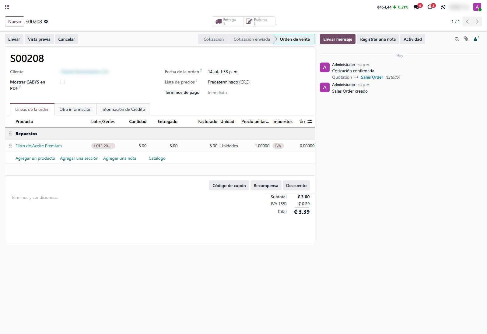
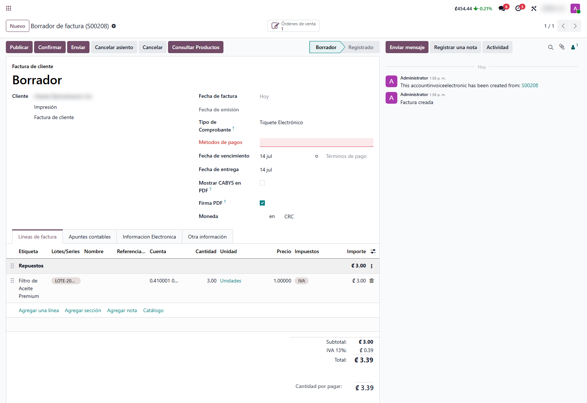
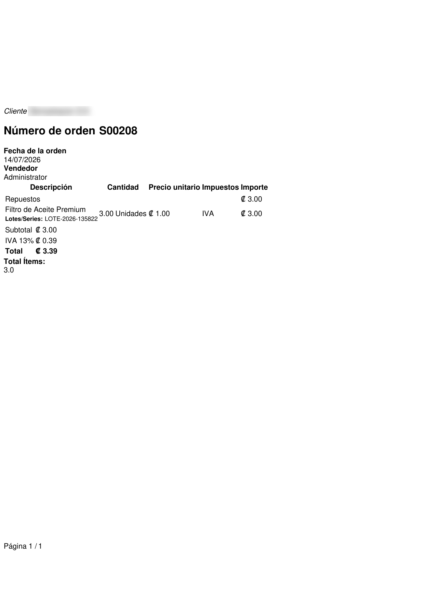

Trazabilidad de Lotes en Ventas
Muestra los lotes y números de serie que realmente se despacharon directamente en el pedido de venta, en la factura y en el PDF impreso. El equipo comercial y el cliente conocen la trazabilidad sin entrar al módulo de Inventario.
Capturas del proyecto
01 / 05




Saber qué lote se le despachó a cada cliente no debería requerir abrir Inventario
En empresas que venden productos rastreados por lote o número de serie, la información de qué lote salió del almacén queda enterrada en las transferencias de inventario. El vendedor no la tiene a mano y el cliente no la ve en su factura.
Este módulo captura automáticamente los lotes al validar la entrega y los muestra donde el equipo comercial trabaja: en el pedido, en la factura y en el documento impreso, con total confiabilidad porque reflejan la salida real del inventario.
Funcionalidades clave
-
Lotes en el pedido
Columna Lotes/Series en las líneas del pedido de venta, con el lote despachado en cada producto.
-
Herencia a la factura
El lote viaja del pedido a la factura automáticamente, para garantías y respaldo fiscal.
-
Lotes en el PDF
El reporte impreso muestra los lotes bajo cada producto y totaliza los ítems vendidos.
-
Captura confiable
Los lotes se registran al validar la entrega: reflejan la salida real, no un dato editado a mano.
-
Entregas parciales
Cada validación de entrega acumula los lotes correspondientes en la línea del pedido.
-
Cero configuración
Funciona apenas se instala; solo requiere que el producto tenga trazabilidad activa.
Tecnología detrás del producto
¿Vendés productos con lote o número de serie?
Integro la trazabilidad de tu inventario con el ciclo de ventas y facturación, adaptado a tu operación.